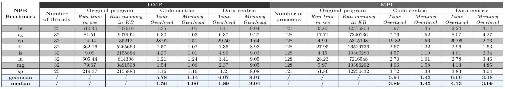

ARM architectures, especially AArch64, are widely used in a variety of computing domains, ranging from SoCs (e.g., smart phones, IoT devices) to PC (e.g., tablets, Macbooks) and even to supercomputers (e.g., Tianhe-3 and Fugaku). Unfortunately, ARM is not a drop-in replacement for legacy software systems. The state of the ARM ecosystem -- compiler, operating system, networking, I/O, among others -- has been a source of concern until recently, which is changing now. Tool infrastructures are needed to help diagnose performance bottlenecks, pinpoint correctness bugs, and identify security vulnerabilities.
There are a number of tools available in ARM eco-systems, which mainly fall into two categories: coarse-grained tools and fine-grained tools. Coarse-grained tools such as MAP, Perf, TAU, Scalasca, and HPCToolkit work on ARM and they sample hardware performance counters or instrument code at source-level or at compiler time to monitor an execution with relatively low overhead. In contrast, fine-grained tools such as Valgrind, DynamoRIO, and Dyninst can monitor every instruction instance via extensive binary instrumentation. These two kinds of tools complement each other and there is place for both depending on the analysis under question.
The coarse-grained tools are more suitable to identify execution hotspots and parallel inefficiencies to name a few; fine-grained tools are valuable to glean deeper insights into execution, for example, reuse-distance analysis, cache simulation, redundancy detection, power and energy analysis, to name a few. Furthermore, fine-grained analysis tools are also necessary for correctness tools such as data-race detection and record and replay. Unfortunately, the tools in the software stack of ARM eco-system are insufficient.
In this work, we develop DrCCTProf, a fine-grained analyer for ARM architectures. Unlike existing fine-grained tools, DrCCTProf has the following features:
Rich insights: DrCCTProf provides both code- and data-centric analysis. The code-centric analysis associates the captured calling contexts with source code if debugging information exists. Moreover, if the monitored instruction is a memory access, DrCCTProf attributes this memory access to the data object allocated either in the static data section or dynamically with malloc family functions. The combination of code- and data-centric provides rich insights for performance analysis.
Low overhead: As a fine-grained tool, DrCCTProf is efficient both in runtime and memory. DrCCTProf employs a dynamically built CCTs to store every call path resulting in an execution. A CCT merges common prefixes across all call paths, which reduces memory overhead dramatically. DrCCTProf employs efficient data structures and inlined binary instrumentation to keep runtime and memory overheads in an acceptable range.
Parallel scaling: As our main target is HPC applications, DrCCTProf handles large, parallel programs. DrCCTProf monitors processes and threads efficiently with minimum synchroniza- tion overhead, yielding good scalability as shown in Section F.2. Furthermore, DrCCTProf aggregates the profiles from different threads and processes and presents them in a compact view.
Data visualization: The fine-grained analysis can produce voluminous data, making data exploration difficult. DrCCTProf employs a GUI to help summarize and interpret this data in a compact, navigable, and hierarchical manner. With the GUI, DrCCTProf can show any correlated contexts (e.g., pairs of data use and reuse contexts) ranked with user-defined metrics.
Extensibility: As a framework, DrCCTProf is well modularized. One can easily enable or disable part of features (e.g., code- or data-centric attribution) to fulfill the need. Moreover, DrCCTProf exposes simple APIs to support client tools. Incorporating code-centric or data-centric features into a fine-grained tool involves minimal efforts.
Applicability: DrCCTProf is broadly applicable to both ARM and x86 architectures, thanks to the support of DynamoRIO. Moreover, DrCCTProf works on binary, which is language, compiler, or programming model independent.
Implementation
Figure 1: Overview of DrCCTProf.
DrCCTProf uses DynamoRIO (maintained by Google) as its underlying binary instrumentation engine. As a framework, DynamoRIO exposes an interface for efficient and comprehensive binary manipulation at runtime. DynamoRIO supports multiple instruction sets, such as x86 and AArch64, and multiple operating systems e.g., Windows, Linux, and Android. Furthermore, DynamoRIO supports inserting inlined assembly code into binary to avoid costly instrumentation of function calls.
Code-centric analysis:
In its simplest form, call path collection should require no more than instrumenting function entries and exits. However, in reality, it is far more challenging because identifying function prologues and epilogues is error prone, especially for fully optimized or stripped binary code. Furthermore, obtaining the call path with precise instruction-level attribution requires a clean disassembly of the function bodies, which is known to be a halting problem due to the presence of data embedded in functions. Our solution is to not rely on static binary disassembly but to rely on runtime dynamic disassembly of instruction streams as they become visible during execution. Hence, DrCCTProf instruments instruction execution streams to capture call and return instructions to dynamically construct a CCT as the execution unfolds. The CCT allows obtaining the current call path as well as any historic call path that ever happened during execution. DrCCTProf handles tail calls, inlined functions, and signals to obtain the accurate and complete call path for any given instruction.
Data-centric analysis:
DrCCTProf has an option to attribute memory accesses to data objects that enclose the effective addresses touched by the memory accesses. DrCCTProf by default handles the following three types of data objects.
Heap data objects: DrCCTProf instruments memory allocation functions such as malloc, calloc, realloc, and free. DrCCTProf uses the allocation context (i.e., the full call path of the memory allocation function) to uniquely identify a heap object. We maintain the allocated memory range and the allocation context in a map.
Static data objects: DrCCTProf uses the names to uniquely identify static objects. DrCCTProf reads the symbol tables from the binary executable and each loaded shared library. From the symbol table, DrCCTProf extracts the name and memory range allocated for each static data object and records them in a map for future usage.
Stack data objects: DrCCTProf identifies accesses to stack memory but does not distinguish individual objects.
DrCCTProf attributes each memory access to the data object recorded in the map with
its effective address. DrCCTProf assigns a 40-bit data handle for each object, where 8 bits represent the data type and 32 bits represent the object itself (either a handle pointing to the allocation context for heap data or an index referencing the variable name in a string pool for static data). For every allocated byte of any given heap and static data object, the shadow memory records its data handle. Upon every memory access, DrCCTProf obtains the data handle from the shadow memory of the effective address with O(1) time complexity. The shadow memory is lock-free and scales well for threaded codes.
Addressing ARM ISA Specifics
ARM supports ldrex and strex instructions to load value from and store value to register exclusively. Compilers generate these two instructions as a pair for atomic or lock implementations. There is a constraint for these two instructions: instrumenting memory instructions between these two instructions results in a deadlock. To address this issue, DrCCTProf only allows the instrumentation before ldrex and after strex. No memory access in between is monitored.
Optimizing with DynamoRIO
DynamoRIO supports two types of instrumentations: clean calls and inlined instructions. Clean calls support sophisticated user-defined analysis but incur high overhead due to the function invocations; inlined instructions are subtle to add but reduce the profiling overhead. DrCCTProf uses the inlined instructions to pass the context and data handles to any client tool that queries them. As querying these handles are used extensively in client tools, DrCCTProf further reduces the overhead.
Handling Parallelism
DrCCTProf supports parallelism with both processes and threads. Each thread and process builds and manages its CCT concurrently. At the end of execution, each thread/process writes its analysis results including the CCT and metrics into its own file. BNode allocation is also lock free. Thus, DrCCTProf can scale to highly parallel executions.
Offline Analysis and Visualization
As a fine-grained tool, DrCCTProf produces a large amount of profiling data, which are typically orders of magnitudes more than coarse-grained tools. To facilitate the analysis, DrCCTProf employs an offline analysis component to (1) obtain additional program structures to the CCT, such as loops and inlined functions, (2) aggregate the profiles from different threads and processes for a compact view, and (3) attribute binary instructions to source codes.
Using DrCCTProf
DrCCTProf exposes a minimum set of APIs to client tools. The client tools, typically, have the following workflow.
Initialize DrCCTProf and register the custom instrumentation functions to monitor all or a subset of instructions.
Query the calling contexts and/or data objects for instructions of their choice.
Correlate contexts involved in the analyzed problem (e.g., memory pairs for data use and reuse) and accumulate metrics related to them. Typically, a map is used, where the key is a 64-bit entity formed out of two 32-bit context handles and the value is any metric.
Output the map as a tailored CCT with metrics for DrCCTProf's offline analysis and visualization.
Overhead Analysis (overhead is subject to change on different ARM platforms)
We evaluate DrCCTProf on a high-end ARM cluster. We use four nodes, total 128 cores, to evaluate the overhead on the NPB benchmark suite v3.3.1 with workload size C. NPB (aka NAS Parallel Benchmarks) is developed by NASA to evaluate the performance of parallel supercomputers, which has both OpenMP and MPI versions. We evaluate both versions compiled with gcc 7.5.0 -O3 and MPICH 3.3a2. While we evaluate all the NPB benchmarks, we show the common benchmarks in OpenMP and MPI versions. We develop two simple client tools of DrCCTProf -- one for collecting calling contexts for all instructions and the other for collecting all data objects for all memory accesses -- for the evaluation.

Table 1: Overhead of DrCCTProf.
The runtime overhead is computed as the execution time with DrCCTProf enabled divided by the native execution time. The memory overhead is computed as the peak memory consumption during the execution with DrCCTProf enabled divided by the peak memory consumption during the native execution; for MPI programs, we sum up peak memory consumption across all MPI processes. Table 1 shows the runtime and memory overhead of DrCCTProf.
For code-centric analysis, to collect call path on each instruction, DrCCTProf incurs a median runtime overhead of 1.56× and 3.89× for OpenMP and MPI benchmarks, respectively. It incurs a median memory overhead of 1.06× and 1.45× for OpenMP and MPI benchmarks, respectively. One outlier is EP, where DrCCTProf incurs 28× runtime overhead. The reason is that loop nests in EP has many distinct basic blocks, which requires more efforts to build the CCT.
For data-centric analysis, to associate each memory access to its constituent object, DrCCTProf incurs a median runtime overhead of 1.89× and 4.13× respectively for OpenMP and MPI benchmarks. The median memory overhead is 9.04× and 3.09× respectively for OpenMP and MPI benchmarks. The high memory overhead is due to the usage of shadow memory for the data-centric attribution.
A Use Case of DrCCTProf
We implement a client tool atop DrCCTProf to collect reuse distances to guide data locality optimization. With the support of DrCCTProf, the client obtains the full calling contexts for both use and reuse instructions, as well as the data objects associated with the memory reuses. The client presents all reuse pairs with both code- and data-centric views in the GUI for further investigation. As a unique capability, the client can show an aggregate view of data objects that account for most reuses. The client uses ∼500 lines of code to enable the powerful reuse distance analysis on ARM architectures.
Figure 2: A client tool of DrCCTProf that measures reuse distance for an OpenMP application.
Figure 2 presents the temporal reuse profiles in the GUI, which consists of three panes. The top pane shows the source code. The bottom left pane shows the reuse pairs with both code- and data-centric attributions; clicking the numbers on the left of the function names can show the corresponding source code at those line numbers in the top pane. The bottom right pane shows the reuse distance metrics -- the occurrences of temporal reuses in this case study. We annotate the snapshot of the GUI to facilitate our discussion.
One hot data object highlighted in the figure accounts for 5.8% of total temporal reuses. Its allocation site Allocate at line 1505 (which is a wrapper of malloc) in the call path indicates the involved array is z8n as shown in the top pane. We investigate one of the top reuse pairs on z8n, which accounts for 3.6% of total temporal reuses. As shown in the full calling context, the use is the memory access at line 1527 in the loop at line 1509 and the reuse is the memory access at line 1314 in the loop at line 1284 inside the function CalcFBHourglassForceForElems. The reuse distance is as high as 4×107 (not shown in the figure), indicating poor temporal locality. The client tool also reports similar reuses for arrays x8n and y8n allocated at line 1503 and 1504 as shown in the source code pane. To enhance the temporal locality, we hoist the two loops (line 1508 and 1283) into their least common ancestor in the call paths (i.e., function CalcHourglassControlForElems) and fuse them. The optimization is safe: the two loops share the same loop bounds and stride and do not change the dependence direction after the fusion. This optimization yields a 1.28× speedup for the entire application.
Conclusions
This blog presents DrCCTProf, a framework for fine-grained call path collection for binaries running on ARM-based clusters. DrCCTProf maintains all call paths in an execution in a compact and efficient calling context tree representation. The design is highly engineered to constraint both time and memory overheads and make it suitable for fine-grained analysis. Moreover, DrCCTProf has an option to associate each memory access instruction with the data object it touches. DrCCTProf is able to monitor large-scale multi-threaded and multi-process executions and its overhead does not grow with parallel scaling. DrCCTProf exposes simple interfaces to allow client tools to incorporate code- and data-centric attribution. DrCCTProf outputs results in a compact profile aggregated from different threads and processes and employs a format consumable by a user-friendly GUI for hierarchical analysis. With an example client tool and a nontrivial optimization case under its guidance, we show that DrCCTProf can support powerful fine-grained analysis with minimum coding efforts.